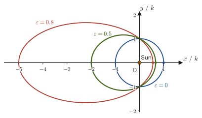
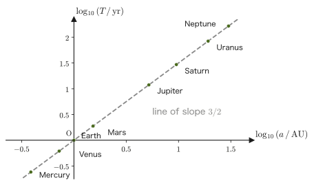
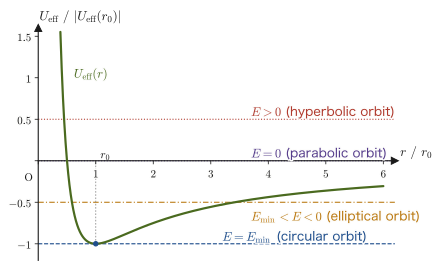
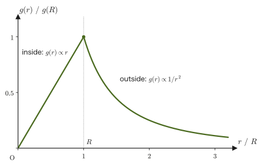
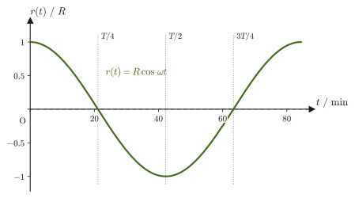

Chapter 8Central Forces and Planetary Motion — Kepler's Laws and the Earth Tunnel
The motion of the planets across the night sky has fascinated humankind since antiquity. From the precise observational data that Tycho Brahe left in the 16th–17th centuries, Johannes Kepler discovered three empirical rules for the orbits of the planets (Kepler's laws)—that the orbit is an ellipse with the Sun at one focal point; that the line segment joining the Sun and a planet sweeps out a constant area per unit time; and that the square of the orbital period is proportional to the cube of the size of the orbit. At the time these were merely “empirical rules” found inductively from observational data. About half a century later, Newton showed how to derive all three of Kepler's laws mathematically from nothing but Newton's law of universal gravitation $F=GMm/r^2$ and Newton's equation of motion (Chapter 2). Empirical rules deduced from the fundamental laws of mechanics—in this chapter we retrace that derivation without omitting a single line. Many readers will have memorized, in high school physics, Kepler's three laws, the areal velocity $\frac12 rv\sin\theta$, the gravitational potential energy $-GMm/r$, the second cosmic velocity (escape velocity) $11.2\ \mathrm{km/s}$, and so on as formulas. In this chapter we rederive all of them from the equation of motion, conservation of angular momentum, and conservation of energy.
This chapter also takes up one more strange and beautiful thought experiment—suppose we dig a straight tunnel through the center of the Earth and drop an object into it. What happens? The answer is “it oscillates.” Moreover, if there is no friction or air resistance, the oscillation obeys exactly the same mathematics as a spring pendulum (Chapter 7), and its period is about 84 minutes, determined by the density alone and not by the size of the Earth. To derive this result, we first prove the beautiful theorem that “inside a uniform sphere, the gravitational attractions from the matter lying farther out than oneself cancel one another” (the shell theorem). Watch how the tools we have built up so far—central forces, conservation of angular momentum, conservation of energy, and differential equations—solve two seemingly unrelated problems, the orbits of the planets and the Earth tunnel, on the same footing.
- Proof that angular momentum is conserved under a central force (a force that always points toward a single point), and that this is the same statement as “constant areal velocity” (Kepler's second law)
- Taking the gravitational attraction as a central force, a proof of Kepler's first law (a planet traces an elliptical orbit with the Sun at one focal point) that omits no line of the derivation
- Derivation of Kepler's third law $T^2\propto a^3$ from the result of the second law and the geometry of the ellipse
- The gravitational potential energy $U=-GMm/r$, the classification of orbits (circle, ellipse, parabola, hyperbola) by means of the effective potential, and the escape velocity
- A proof of the shell theorem on gravity inside and outside a uniform sphere, and, using it, the derivation of the equation of motion and the period (about 84 minutes) for the Earth tunnel
Source notes: Yasuhide Mochizuki, Physics Notes: Mechanics, pp. 22–23.
8.1 Central Forces and Conservation of Angular Momentum — Constant Areal Velocity (Kepler's Second Law)
In the preceding chapters we have studied the motion of a particle (point mass) when the force acting on it is specified concretely, as with gravity, the restoring force of a spring, or air resistance. In this chapter we consider one especially important class of forces—central forces. The gravitational attraction that a planet receives from the Sun is a representative central force, and the Coulomb force that we shall study later in electromagnetism (the force between point charges, Chapter 35) has the same mathematical structure. Motion under a central force has a general property that holds regardless of the detailed form of the force, and this is the real content of Kepler's second law (constant areal velocity).
Definition 8.1: Central force
Consider a point $\mathrm O$ fixed in space. When the force $\bm F$ acting on a particle always points along the straight line joining $\mathrm O$ and the particle, and its magnitude is determined only by the distance $r$ from $\mathrm O$ (not by the angle $\theta$), $\bm F$ is called a central force about the point $\mathrm O$. Using the unit vector $\bm e_r$ in the radial direction of the polar coordinates $(r,\theta)$ with $\mathrm O$ as origin (Chapter 3), a central force can be written in the form
$$ \bm F=f(r)\,\bm e_r $$Here $f(r)$ is a function of $r$ alone; if $f(r)\lt 0$ it is an attractive force directed toward $\mathrm O$, and if $f(r)\gt 0$ it is a repulsive force directed away from $\mathrm O$. The gravitational attraction $f(r)=-GMm/r^2$ ($G$ is the gravitational constant and $M$ is the mass of the central body) is the representative central force of this form; in this chapter we treat it with the Sun fixed at $\mathrm O$ and the particle as a planet (the Sun should also move, but since the mass of the Sun is far greater than that of a planet, the approximation of regarding the Sun as a stationary origin holds well).
That a central force is a conservative force was already shown in Section 4.4.3 (Theorem 4.3). In this chapter we investigate the effect that a central force has on the angular momentum.
Newton's law of universal gravitation, learned in high school physics, states that two particles of masses $M$ and $m$ separated by a distance $r$ exert on each other attractive forces of magnitude $F=GMm/r^2$. The proportionality constant $G=6.674\times10^{-11}\ \mathrm{N\,m^2/kg^2}$ is the gravitational constant, and its unit is fixed so that $G\times\mathrm{kg}\times\mathrm{kg}/\mathrm{m^2}=\mathrm N$. Since the attractive force acts in the direction toward $\mathrm O$ (the direction of $-\bm e_r$), we can write $f(r)=-GMm/r^2$.
8.1.1 Conservation of angular momentum under a central force
As we learned in Chapter 2, between the angular momentum $\bm L=\bm r\times\bm p$ about the origin $\mathrm O$ ($\bm p=m\bm v$ is the momentum) and the torque $\bm N=\bm r\times\bm F$ there holds the general relation, derived from the equation of motion $\bm F=\dd\bm p/\dd t$,
$$ \bm N=\frac{\dd\bm L}{\dd t} $$(torque = rate of change of angular momentum). In the case of a central force, $\bm F=f(r)\bm e_r$ is a vector parallel (or exactly antiparallel) to the position vector $\bm r=r\bm e_r$, so the torque is
$$ \bm N=\bm r\times\bm F=(r\bm e_r)\times\big(f(r)\bm e_r\big)=r\,f(r)\,(\bm e_r\times\bm e_r)=\bm 0 $$From the definition of the cross product (University Mathematics, Section 15.3), $\bm a\times\bm a=\bm 0$ for any vector $\bm a$ (the cross product of a vector with itself is the zero vector; this corresponds to the fact that the “parallelogram” formed by two parallel vectors has area 0), so $\bm e_r\times\bm e_r=\bm 0$. Therefore,
$$ \frac{\dd\bm L}{\dd t}=\bm N=\bm 0 $$and $\bm L$ is constant in time.
Law 8.1: Conservation of angular momentum under a central force
When a particle moves under the action of nothing but a central force about the origin $\mathrm O$, the angular momentum $\bm L=\bm r\times\bm p$ about $\mathrm O$ is kept constant in time.
Intuition: Why is angular momentum conserved under a central force?
The torque $\bm N=\bm r\times\bm F$ is, intuitively, a quantity expressing “the effect of a force trying to rotate an object about the origin.” Since the direction of a central force always lies along the straight line joining the origin and the particle (that is, along the position vector $\bm r$ itself), it has no “twisting” effect about the origin at all—just as a door does not rotate when you push along the line extending outward from its hinge. Since the rotating effect (the torque) is always 0, it is natural that the angular momentum, which expresses the momentum of rotation, does not change.
8.1.2 Angular momentum and areal velocity in polar coordinates
Let us write down the law of conservation of angular momentum, $\bm L=\text{constant}$, concretely in polar coordinates $(r,\theta)$ in the plane in which the motion takes place (Chapter 3). The velocity in polar coordinates was
$$ \bm v=\dot r\,\bm e_r+r\dot\theta\,\bm e_\theta $$(Section 6.1). Using this, the angular momentum becomes
$$ \bm L=\bm r\times\bm p=m\,\bm r\times\bm v=m(r\bm e_r)\times(\dot r\,\bm e_r+r\dot\theta\,\bm e_\theta) =mr\dot r\,(\bm e_r\times\bm e_r)+mr^2\dot\theta\,(\bm e_r\times\bm e_\theta) $$(we expanded using the distributive law of the cross product). Since $\bm e_r\times\bm e_r=\bm 0$, and $\bm e_r,\bm e_\theta$ are mutually orthogonal vectors of magnitude 1, the right-hand rule (University Mathematics, Section 15.3) gives $\bm e_r\times\bm e_\theta=\bm e_z$ (the unit vector perpendicular to the plane in which the motion takes place). Therefore,
\begin{equation} \bm L=mr^2\dot\theta\,\bm e_z \label{eq:8-L-polar} \end{equation}Since $\bm e_z$ is a vector of constant direction, the constancy of $\bm L$ is equivalent to the constancy in time of the scalar quantity
\begin{equation} L\equiv mr^2\dot\theta \label{eq:8-L-scalar} \end{equation}This also means that the motion takes place within a single plane—if $\bm L\ne\bm 0$, the direction of the angular momentum $\bm L=\bm r\times\bm p$ is constant, and since $\bm r$ is perpendicular to $\bm L$, the position vector always lies in the plane perpendicular to $\bm L$. The trajectory of a particle subject to a central force is necessarily a curve in a plane. (In the case $\bm L=\bm 0$, $\bm r$ and $\bm v$ are parallel, and the motion is confined to a single straight line through the origin. In this case a plane is not uniquely determined, but since the motion is rectilinear it may still be regarded as motion in a plane.)
Law 8.2: The law of constant areal velocity (Kepler's second law)
When a particle rotates its position vector $\bm r$ through $\dd\theta$ between time $t$ and time $t+\dd t$, the infinitesimal area swept out by the position vector can be written as the area of a sector of radius $r$ and central angle $\dd\theta$:
$$ \dd A=\frac12 r^2\,\dd\theta $$(this is a generalization to an infinitesimal angle of the fact that dividing the area formula $\pi r^2$ of a circle by the full angle $2\pi$ gives the area per unit angle, $r^2/2$). Dividing both sides by $\dd t$, the area swept out per unit time (the areal velocity) is
\begin{equation} \frac{\dd A}{\dd t}=\frac12 r^2\dot\theta=\frac{L}{2m} \label{eq:8-areal-velocity} \end{equation}Under a central force $L$ is constant, and $m$ is constant too, so the areal velocity $\dd A/\dd t$ is constant in time. That is, the line segment joining the particle and the center sweeps out equal areas in equal times. This is Kepler's second law, and it is a general property that holds for any central force, whatever the form $f(r)$ of the force, not only for the gravitational attraction.
Caution: Constant areal velocity is not the same as “constant speed”
The law of constant areal velocity does not say that the speed $|\bm v|$ of the particle is constant. From Eq. \eqref{eq:8-areal-velocity}, $r^2\dot\theta=$ constant, so where $r$ is small (near the center) $\dot\theta$ is large, and the particle moves quickly in the angular direction. Indeed, as we shall see in Section 8.2, a planet moves fastest at perihelion, where it is closest to the Sun, and slowest at aphelion, where it is farthest from the Sun. Let us be careful not to confuse the two: it is the “areal velocity” that is constant, not the “speed.”
Example 8.1: Speeds of a comet at perihelion and aphelion
A certain comet moves around the Sun in an elliptical orbit; its distance at perihelion, where it comes closest to the Sun, is $r_1=0.50\ \mathrm{AU}$, and its speed there is $v_1=56\ \mathrm{km/s}$ ($1\ \mathrm{AU}=1.496\times10^{11}\ \mathrm{m}$; the mean Earth–Sun distance = the radius of the Earth's orbit). If its distance at aphelion, where it is farthest from the Sun, is $r_2=4.0\ \mathrm{AU}$, find the speed $v_2$ at aphelion. Also, using the values at perihelion, verify that this comet really traces an elliptical orbit bound to the Sun (that is, that its mechanical energy is negative).
Solution. At perihelion and aphelion the particle is at its nearest (or farthest) point from the Sun, so the radial component of velocity $\dot r$ is exactly 0 (since these are the instants at which $r(t)$ is a minimum or a maximum), and the velocity has only a tangential (angular-direction) component. Therefore at these points $|\bm v|=r|\dot\theta|$ holds. Rewriting the conservation of angular momentum $L=mr^2\dot\theta=$ constant of Law 8.2 using $v=r\dot\theta$ (considering only magnitudes, not signs), we get
$$ L=mr^2\dot\theta=m\,r\,(r\dot\theta)=m\,r\,v $$Since $m$ does not change, the value of $rv$ is equal at perihelion and aphelion:
$$ r_1v_1=r_2v_2 $$Solving this for $v_2$, we obtain
$$ v_2=\frac{r_1v_1}{r_2}=\frac{0.50\ \mathrm{AU}\times56\ \mathrm{km/s}}{4.0\ \mathrm{AU}}=\frac{28\ \mathrm{AU\cdot km/s}}{4.0\ \mathrm{AU}}=7.0\ \mathrm{km/s} $$(the unit AU cancels between numerator and denominator, so the answer in $\mathrm{km/s}$ is obtained directly). At perihelion the comet is eight times closer to the Sun than at aphelion, so its speed there is also eight times greater ($56/7.0=8$)—just as the law of constant areal velocity qualitatively predicts, the closer to the center, the faster the particle moves.
Next, we verify that the comet is bound. Using the Sun's value $GM_\odot=1.327\times10^{20}\ \mathrm{m^3/s^2}$ (to be found in Example 8.3 in Section 8.3), together with $r_1=0.50\times1.496\times10^{11}\ \mathrm m=7.48\times10^{10}\ \mathrm m$ and $v_1=5.6\times10^4\ \mathrm{m/s}$, the mechanical energy per unit mass at perihelion (kinetic energy plus potential energy $-GM_\odot/r_1$; the potential energy is derived in Section 8.4.1) is
$$ \frac Em=\frac12v_1^2-\frac{GM_\odot}{r_1}=\frac12(5.6\times10^4)^2-\frac{1.327\times10^{20}}{7.48\times10^{10}}\approx1.57\times10^{9}-1.77\times10^{9}\approx-2.1\times10^{8}\ \mathrm{J/kg} $$which is negative. If it is negative, the comet is bound (Theorem 8.1 in Section 8.4), so the orbit is a closed ellipse. If we made the perihelion speed $v_1=60\ \mathrm{km/s}$, it would exceed the Sun's escape velocity at this distance, $\sqrt{2GM_\odot/r_1}\approx59.6\ \mathrm{km/s}$ (Section 8.4.3), the orbit would be a hyperbola with $E\gt0$, and the aphelion itself would not exist. In order that an elliptical orbit exist for the given pair of distances $(r_1,r_2)=(0.50,\ 4.0)\ \mathrm{AU}$, the perihelion speed must be about $56\ \mathrm{km/s}$.
8.2 Proof of Kepler's First Law
Law 8.3: Kepler's first law
A planet moving around the Sun traces an elliptical orbit with the Sun at one focal point.
Let us prove this law from Newton's law of universal gravitation and Newton's equation of motion alone. We fix the Sun at the origin $\mathrm O$ (the mass $M$ of the Sun is far larger than the mass $m$ of the planet, so the Sun can be regarded as being at rest), and describe the position of the planet in polar coordinates $(r,\theta)$. The gravitational attraction that the planet receives from the Sun is a central force directed toward the Sun,
$$ \begin{cases} f_r=-\dfrac{GMm}{r^2} \\[1mm] f_\theta=0 \end{cases} $$(it has only a radial component; the angular component is 0).
Derivation: Proof of Kepler's first law
We substitute the formulas for acceleration in polar coordinates derived in Chapter 6, $a_r=\ddot r-r\dot\theta^2,\ a_\theta=2\dot r\dot\theta+r\ddot\theta$, directly into the radial and angular components of the equation of motion $\bm F=m\bm a$:
$$ f_r=ma_r=m(\ddot r-r\dot\theta^2)=-\frac{GMm}{r^2}, \qquad f_\theta=ma_\theta=m(2\dot r\dot\theta+r\ddot\theta)=0 $$Dividing both sides by $m$ ($\ne0$) gives
$$ \begin{cases} \ddot r-r\dot\theta^2=-\dfrac{GM}{r^2} & \cdots\text{①}\\[2mm] 2\dot r\dot\theta+r\ddot\theta=0 \end{cases} $$a system of simultaneous ordinary differential equations. We rearrange the second equation by running the product rule backwards. Indeed, differentiating $r^2\dot\theta$ with respect to $t$ gives, by the product rule,
$$ \frac{\dd}{\dd t}(r^2\dot\theta)=2r\dot r\,\dot\theta+r^2\ddot\theta=r(2\dot r\dot\theta+r\ddot\theta) $$so dividing both sides by $r$ ($\ne0$) gives the identity $2\dot r\dot\theta+r\ddot\theta=\dfrac1r\dfrac{\dd}{\dd t}(r^2\dot\theta)$. Using this in the second equation, we obtain
$$ \begin{cases} \ddot r-r\dot\theta^2=-\dfrac{GM}{r^2} & \cdots\text{①}\\[2mm] \dfrac1r\dfrac{\dd}{\dd t}(r^2\dot\theta)=0 & \cdots\text{②} \end{cases} $$This is the form the system takes. As long as $r\ne0$, ② is equivalent to $\dfrac{\dd}{\dd t}(r^2\dot\theta)=0$, which means that $r^2\dot\theta$ is constant in time—this is precisely Law 8.2 of Section 8.1 (conservation of angular momentum, constant areal velocity). We therefore denote this constant value by
$$ r^2\dot\theta=C_1\qquad\left(\text{hence}\quad\frac12 r^2\dot\theta=\frac{C_1}{2}=\text{constant (law of constant areal velocity)}\right) $$(here $C_1=L/m$, where $L$ is the magnitude of the angular momentum of Section 8.1). Next, we multiply both sides of ① by $r^3$ ($\gt0$). We do this because the second term on the left-hand side can then be written in terms of $r^2\dot\theta$ alone:
$$ \ddot r\,r^3-r\dot\theta^2\cdot r^3=\ddot r\,r^3-r^4\dot\theta^2=\ddot r\,r^3-(r^2\dot\theta)^2=-GMr $$(the second term on the left-hand side is $r\dot\theta^2\cdot r^3=r^4\dot\theta^2=(r^2\dot\theta)^2$, and the right-hand side is $-\dfrac{GM}{r^2}\cdot r^3=-GMr$). Substituting $r^2\dot\theta=C_1$ gives $\ddot r\,r^3-C_1^2=-GMr$, and dividing both sides by $r$ ($\ne0$) yields
\begin{equation} \ddot r\,r^2-\frac{C_1^2}{r}=-GM \label{eq:8-radial-eq} \end{equation}This equation still contains two functions of time, $r(t)$ and $\theta(t)$, so it is hard to solve as it stands. We therefore replace the independent variable, switching from the time $t$ to the angle $\theta$—that is, we change our approach to eliminating the time $t$ from $r(t)$ and $\theta(t)$, regarding $r$ as a function $r(\theta)$ of $\theta$, and seeking the shape of the orbit $r(\theta)$ (the distance from the Sun when the planet lies in the direction of angle $\theta$).
Using the derivative of a composite function of one variable (the chain rule, University Mathematics, Section 6.4), and since $r$ is directly a function $r(\theta)$ of $\theta$ while $\theta$ is in turn a function $\theta(t)$ of $t$, we have
$$ \dot r=\frac{\dd r}{\dd t}=\frac{\dd r}{\dd\theta}\cdot\frac{\dd\theta}{\dd t} $$Substituting $\dot\theta=C_1/r^2$ (obtained by solving $r^2\dot\theta=C_1$ for $\dot\theta$), we get
$$ \dot r=\frac{\dd r}{\dd\theta}\cdot\frac{C_1}{r^2}=C_1\cdot\frac{1}{r^2}\cdot\frac{\dd r}{\dd\theta} $$Here we notice that the form $\dfrac{1}{r^2}\dfrac{\dd r}{\dd\theta}$ is related to the derivative of $1/r$ with respect to $\theta$. Indeed, by the quotient rule (or the derivative of a composite function),
$$ \frac{\dd}{\dd\theta}\left(\frac1r\right)=\frac{\dd}{\dd r}\left(\frac1r\right)\cdot\frac{\dd r}{\dd\theta}=-\frac{1}{r^2}\cdot\frac{\dd r}{\dd\theta} $$so $\dfrac{1}{r^2}\dfrac{\dd r}{\dd\theta}=-\dfrac{\dd}{\dd\theta}\left(\dfrac1r\right)$. Substituting this, we obtain
$$ \dot r=C_1\left\{-\frac{\dd}{\dd\theta}\left(\frac1r\right)\right\} $$We apply the same procedure to $\ddot r$ as well. By the chain rule,
$$ \ddot r=\frac{\dd}{\dd t}\left(\frac{\dd r}{\dd t}\right)=\frac{\dd}{\dd\theta}\left(\frac{\dd r}{\dd t}\right)\cdot\frac{\dd\theta}{\dd t} =\frac{\dd}{\dd\theta}\left\{-C_1\frac{\dd}{\dd\theta}\left(\frac1r\right)\right\}\cdot\frac{C_1}{r^2} =-\frac{C_1^2}{r^2}\cdot\frac{\dd^2}{\dd\theta^2}\left(\frac1r\right) $$(we used $\dot\theta=C_1/r^2$ once more, and differentiated $-C_1\dfrac{\dd}{\dd\theta}(1/r)$ with respect to $\theta$ one more time).
Now we make the substitution $r=1/u$, that is, $u\equiv1/r$ (why this is convenient can be seen from the fact that the preceding expression for $\ddot r$ already contains, quite naturally, the second derivative $\dd^2(1/r)/\dd\theta^2$ of $1/r$—if we set $u=1/r$, this expression becomes an equation for $u$ as it stands). Then
$$ \dot r=-C_1\frac{\dd u}{\dd\theta},\qquad \ddot r=-\frac{C_1^2}{r^2}\frac{\dd^2u}{\dd\theta^2} $$Substituting these into Eq. \eqref{eq:8-radial-eq} ($\ddot r\,r^2-C_1^2/r=-GM$), we obtain
$$ r^2\left(-\frac{C_1^2}{r^2}\frac{\dd^2u}{\dd\theta^2}\right)-C_1^2u=-GM $$(we used $C_1^2/r=C_1^2u$). The $r^2$ in the first term on the left-hand side cancels, leaving
$$ -C_1^2\frac{\dd^2u}{\dd\theta^2}-C_1^2u=-GM $$Dividing both sides by $-C_1^2$ ($\ne0$), we get
\begin{equation} \frac{\dd^2u}{\dd\theta^2}+u=\frac{GM}{C_1^2} \label{eq:8-u-ode} \end{equation}This is a second-order linear inhomogeneous differential equation for $u(\theta)$, with $\theta$ as the independent variable (it is inhomogeneous because the right-hand side is a constant and not 0; see Definition 35.1 in University Mathematics, Section 35.1). Noting that the right-hand side is a constant, we see that it has the same form as the equation of motion of the spring pendulum solved in Chapter 7, $\ddot x+\omega^2x=0$ (the case $\omega=1$), with just a constant term added.
The general solution of an inhomogeneous equation is the sum “general solution of the homogeneous equation + one particular solution” (University Mathematics, Section 36.1). The homogeneous equation $\dd^2u/\dd\theta^2+u=0$ can be solved by exactly the same procedure as the derivation in Section 7.1 (characteristic equation $\lambda^2+1=0$, $\lambda=\pm i$), and its general solution can be written as $A\cos(\theta-\theta_0)$ (a form with the amplitude $A$ and the phase $\theta_0$ as arbitrary constants; see “Intuition” in Section 7.1). For a particular solution, since the right-hand side is the constant $GM/C_1^2$, we may simply try $u=$ (constant)—the second derivative of a constant is 0, so setting $u_0=GM/C_1^2$ gives $\dd^2u_0/\dd\theta^2+u_0=0+GM/C_1^2=GM/C_1^2$, which indeed satisfies Eq. \eqref{eq:8-u-ode}. Therefore the general solution is
$$ u(\theta)=\frac{GM}{C_1^2}+A\cos(\theta-\theta_0) $$(here $A,\ \theta_0$ are arbitrary constants determined by the initial conditions. If $A\lt0$, shifting $\theta_0$ by $\pi$ gives $A\cos(\theta-\theta_0)=|A|\cos(\theta-\theta_0-\pi)$, so we may take $A\ge0$ without loss of generality).
Another way to see it: Setting $w(\theta)\equiv u(\theta)-\dfrac{GM}{C_1^2}$, since $GM/C_1^2$ is a constant we have $\dd^2w/\dd\theta^2=\dd^2u/\dd\theta^2$, and Eq. \eqref{eq:8-u-ode} can be rewritten as
$$ \frac{\dd^2w}{\dd\theta^2}+w=0 $$This has exactly the same form as the equation of simple harmonic motion $\ddot x+\omega^2x=0$ ($\omega=1$) in Chapter 7, with the angle $\theta$ as the variable in place of the time $t$. Hence the general solution is $w=A\cos(\theta-\theta_0)$, and $u=GM/C_1^2+A\cos(\theta-\theta_0)$ is obtained once again. In other words, the orbit of a planet is one in which “$1/r$ undergoes simple harmonic motion about the mean value $GM/C_1^2$ as the angle $\theta$ varies.” Returning to $r=1/u$, we get
$$ r(\theta)=\frac{1}{u(\theta)}=\cfrac{1}{\dfrac{GM}{C_1^2}+A\cos(\theta-\theta_0)} $$Multiplying the numerator and denominator by $C_1^2/(GM)$ and simplifying, we obtain
$$ r(\theta)=\cfrac{\dfrac{C_1^2}{GM}}{1+\dfrac{C_1^2A}{GM}\cos(\theta-\theta_0)} $$Now let
$$ k\equiv\frac{C_1^2}{GM},\qquad \varepsilon\equiv\frac{C_1^2A}{GM}=kA $$($k$ is a constant with the dimension of length, and $\varepsilon$ is a dimensionless constant). Let us check the dimensions. The unit of $C_1=r^2\dot\theta$ is $\mathrm{m^2/s}$, and the unit of $GM$ is $\mathrm{N\,m^2/kg^2}\times\mathrm{kg}=\mathrm{m^3/s^2}$, so the unit of $k=C_1^2/(GM)$ is $(\mathrm{m^2/s})^2/(\mathrm{m^3/s^2})=\mathrm m$, which is indeed a length. Finally we obtain
\begin{equation} r(\theta)=\frac{k}{1+\varepsilon\cos(\theta-\theta_0)} \label{eq:8-orbit} \end{equation}This is exactly the equation of a conic section in polar coordinates classified in Section 6.3. The constant $\theta_0$ is determined only by how we choose the coordinates, that is, which direction we take as the angular reference ($\theta=0$). In what follows, therefore, we choose the direction of the point closest to the Sun (the perihelion) as $\theta=0$, set $\theta_0=0$, and write
$$ r(\theta)=\frac{k}{1+\varepsilon\cos\theta} $$The value of $\varepsilon=kA\ge0$ is determined by the initial position and initial velocity of the planet (the initial conditions). According to observation, all the planets of the Solar System have $0\lt\varepsilon\lt1$ (in Section 8.4 we will show that the planet being bound to the Sun, that is, having mechanical energy $E\lt0$, is the same statement as $0\le\varepsilon\lt1$). By the classification in Section 6.3 ($\varepsilon=0$: circle, $0\lt\varepsilon\lt1$: ellipse, $\varepsilon=1$: parabola, $\varepsilon\gt1$: hyperbola), this orbit is an ellipse. Moreover, the equation $r=k/(1+\varepsilon\cos\theta)$ is precisely the representation of a conic section in polar coordinates with the origin (the position of the Sun) taken at a focal point (in Section 6.3 we derived that, when the focal point is taken as the origin, a conic section takes the form $r=k/(1+\varepsilon\cos\theta)$). That is, a planet traces an elliptical orbit with the Sun at a focal point—this is Kepler's first law.
∎
Math Tool: Classification of conic sections in polar coordinates (review of Chapter 6)
The form $r(\theta)=k/(1+\varepsilon\cos\theta)$ of Eq. \eqref{eq:8-orbit} is classified according to the value of the eccentricity $\varepsilon$ as follows (Section 6.3): a circle for $\varepsilon=0$, an ellipse for $0\lt\varepsilon\lt1$, a parabola for $\varepsilon=1$, and a hyperbola for $\varepsilon\gt1$. Under universal gravitation (an attractive force, $f(r)\lt0$), $\varepsilon$ is determined by the sign of the energy (details in Section 8.4). Planets, comets, and asteroids bound to the Sun trace orbits with $0\le\varepsilon\lt1$ (circles or ellipses), while bodies that break free of the Sun's gravity and fly off to infinity (some comets, interstellar objects) trace orbits with $\varepsilon\ge1$ (parabolas or hyperbolas).

Example 8.2: Determining the orbit from the perihelion distance and speed
The Earth comes closest to the Sun (perihelion) in early January. At that moment its distance from the Sun is $r_p=1.471\times10^{11}\ \mathrm m$ and its speed is $v_p=30.29\ \mathrm{km/s}$ (the velocity is perpendicular to the radial direction). Taking $GM_\odot=1.32712\times10^{20}\ \mathrm{m^3/s^2}$, find (1) the constants $C_1,\ k,\ \varepsilon$ that determine the orbit, (2) the aphelion distance $r_a$ and the ratio $r_a/r_p$, and (3) the speed $v_a$ at aphelion.
Solution. (1) At perihelion the velocity points in the angular direction, so $r_p\dot\theta=v_p$, and hence $C_1=r_p^2\dot\theta=r_pv_p$:
$$ C_1=r_pv_p=1.471\times10^{11}\ \mathrm m\times3.029\times10^{4}\ \mathrm{m/s}=4.456\times10^{15}\ \mathrm{m^2/s} $$Then $k=C_1^2/(GM_\odot)$ is
$$ k=\frac{(4.456\times10^{15}\ \mathrm{m^2/s})^2}{1.32712\times10^{20}\ \mathrm{m^3/s^2}}=\frac{1.985\times10^{31}}{1.32712\times10^{20}}\ \mathrm m\approx1.496\times10^{11}\ \mathrm m $$The perihelion corresponds to $\theta=0$, so $r_p=k/(1+\varepsilon)$, that is, $\varepsilon=k/r_p-1$, which gives
$$ \varepsilon=\frac{1.4959\times10^{11}}{1.471\times10^{11}}-1\approx0.01695\approx0.017 $$(2) The aphelion corresponds to $\theta=\pi$, so
$$ r_a=\frac{k}{1-\varepsilon}=\frac{1.4959\times10^{11}\ \mathrm m}{1-0.01695}\approx1.52\times10^{11}\ \mathrm m,\qquad \frac{r_a}{r_p}=\frac{1+\varepsilon}{1-\varepsilon}=\frac{1.01695}{0.98305}\approx1.034 $$The Earth's orbit is thus nearly circular, and its aphelion is only about 3.4% farther away than its perihelion (close to the case $\varepsilon=0$ in Figure 8.3). Note also that $k\approx1.496\times10^{11}\ \mathrm m=1\ \mathrm{AU}$.
(3) Since the areal velocity is constant (conservation of angular momentum), $r_pv_p=r_av_a$, so
$$ v_a=\frac{r_p}{r_a}\,v_p=\frac{30.29\ \mathrm{km/s}}{1.034}\approx29.3\ \mathrm{km/s} $$That is the required speed at aphelion.
Verification: The general solution satisfies the differential equation
Let us check by substituting the general solution $u(\theta)=\dfrac{GM}{C_1^2}+A\cos(\theta-\theta_0)$ of Eq. \eqref{eq:8-u-ode} directly. Differentiating with respect to $\theta$ (the derivative of the constant term $GM/C_1^2$ is 0), we get
$$ \frac{\dd u}{\dd\theta}=-A\sin(\theta-\theta_0),\qquad \frac{\dd^2u}{\dd\theta^2}=-A\cos(\theta-\theta_0) $$Therefore,
$$ \frac{\dd^2u}{\dd\theta^2}+u=-A\cos(\theta-\theta_0)+\left\{\frac{GM}{C_1^2}+A\cos(\theta-\theta_0)\right\}=\frac{GM}{C_1^2} $$and since the terms $\mp A\cos(\theta-\theta_0)$ cancel each other, the left-hand side indeed agrees with the right-hand side $GM/C_1^2$.
8.3 Kepler's Third Law — Period and Semi-Major Axis
Combining Kepler's first law (Section 8.2) and second law (Section 8.1), we can derive the relation between the orbital period $T$ of a planet and the size of its orbit—Kepler's third law. It follows naturally from the result of the first law, $r(\theta)=k/(1+\varepsilon\cos\theta)$ (Eq. \eqref{eq:8-orbit}), and the areal velocity of the second law, $\dd A/\dd t=C_1/2$ (Eq. \eqref{eq:8-areal-velocity}). The relation $T^2\propto a^3$, which you memorized as a formula in high school physics, is derived here from the equation of motion.
8.3.1 Relations between the semi-major and semi-minor axes of the ellipse and $k,\varepsilon$
First we work out how $k,\varepsilon$ in Eq. \eqref{eq:8-orbit} are related to the semi-major axis $a$ of the ellipse (half of the major axis joining perihelion and aphelion) and the semi-minor axis $b$. The perihelion (the point closest to the Sun) corresponds to $\theta=0$ and the aphelion (the farthest point) to $\theta=\pi$, so the respective distances are
$$ r_{\min}=r(0)=\frac{k}{1+\varepsilon},\qquad r_{\max}=r(\pi)=\frac{k}{1-\varepsilon} $$The semi-major axis $a$ is defined as the average of the perihelion distance and the aphelion distance (half of the major axis $2a=r_{\min}+r_{\max}$), so
$$ a=\frac{r_{\min}+r_{\max}}{2}=\frac12\left(\frac{k}{1+\varepsilon}+\frac{k}{1-\varepsilon}\right) =\frac{k}{2}\cdot\frac{(1-\varepsilon)+(1+\varepsilon)}{(1+\varepsilon)(1-\varepsilon)} =\frac{k}{2}\cdot\frac{2}{1-\varepsilon^2} $$That is,
\begin{equation} a=\frac{k}{1-\varepsilon^2} \label{eq:8-a-k-eps} \end{equation}Next we find the semi-minor axis $b$ (half of the minor axis). First, let $c$ be the distance from the center of the ellipse (the midpoint of the major axis) to the focal point (the Sun). As seen from the Sun, the perihelion is at the end of the major axis on the same side as the center, at a distance $a$ from the center, so $r_{\min}=a-c$. Substituting $k=a(1-\varepsilon^2)$ from Eq. \eqref{eq:8-a-k-eps} into $r_{\min}=k/(1+\varepsilon)$ gives $r_{\min}=a(1-\varepsilon)$, so
$$ c=a-r_{\min}=a-a(1-\varepsilon)=a\varepsilon $$This gives the distance from the center to the focal point (it also agrees with the high school mathematics definition of the eccentricity, $\varepsilon=c/a$). Next, the distances from an endpoint of the minor axis (at a distance $b$ from the center) to the two focal points are equal by symmetry, and by the definition of the ellipse (the sum of the distances from the two focal points is constant, $=2a$) their sum is $2a$, so each of them is $a$ (High School Mathematics, Section 8.2). Applying the Pythagorean theorem to the right triangle formed by this endpoint, the center, and a focal point (hypotenuse $a$, the other two sides $b$ and $c$), we have
$$ b^2=a^2-c^2=a^2-a^2\varepsilon^2=a^2(1-\varepsilon^2)\qquad\therefore\ b=a\sqrt{1-\varepsilon^2} $$This is the semi-minor axis. Expressing it in terms of $k$ by means of Eq. \eqref{eq:8-a-k-eps}, we get
$$ b=a\sqrt{1-\varepsilon^2}=\frac{k}{1-\varepsilon^2}\cdot\sqrt{1-\varepsilon^2}=\frac{k}{\sqrt{1-\varepsilon^2}} $$This is the required relation.
8.3.2 Derivation of the orbital period
Derivation: Kepler's third law
By Law 8.2 of Section 8.1 (constant areal velocity), the area swept out by the position vector per unit time is $\dd A/\dd t=C_1/2$ (constant). During one revolution of the planet (orbital period $T$), the total area swept out is exactly equal to the full area of the ellipse, $\pi ab$ (since going once around the orbit sweeps out the entire area enclosed by the orbit exactly once. The area of an ellipse is $\pi ab$ because an ellipse is what we get by squashing a circle of radius $a$ by a factor of $b/a$ in the $y$ direction only, which also multiplies the area by $b/a$, so that $\pi a^2\cdot(b/a)=\pi ab$). Since the areal velocity is constant, the relation “area swept out = areal velocity × time taken” can be used as it is, and we have
$$ \pi ab=\frac{C_1}{2}\,T $$Solving this for $T$, we get
\begin{equation} T=\frac{2\pi ab}{C_1} \label{eq:8-T-ab} \end{equation}Into this we substitute $k=C_1^2/GM$ (that is, $C_1=\sqrt{GMk}$), defined in Section 8.2, and $k=a(1-\varepsilon^2)$ and $b=a\sqrt{1-\varepsilon^2}$, derived in Section 8.3.1. First, expressing $C_1$ in terms of $a$, we have
$$ C_1=\sqrt{GMk}=\sqrt{GM\cdot a(1-\varepsilon^2)} $$Substituting this and $b=a\sqrt{1-\varepsilon^2}$ into Eq. \eqref{eq:8-T-ab}, we obtain
$$ T=\frac{2\pi a\cdot a\sqrt{1-\varepsilon^2}}{\sqrt{GM\cdot a(1-\varepsilon^2)}} =\frac{2\pi a^2\sqrt{1-\varepsilon^2}}{\sqrt{GMa}\sqrt{1-\varepsilon^2}} =\frac{2\pi a^2}{\sqrt{GMa}} $$(The factors $\sqrt{1-\varepsilon^2}$ in the numerator and the denominator cancel and disappear—note that the eccentricity $\varepsilon$ drops out of the expression for the period completely.) Simplifying with $a^2/\sqrt{a}=a^{2-1/2}=a^{3/2}=\sqrt{a^3}$, we get
\begin{equation} T=2\pi\sqrt{\frac{a^3}{GM}} \label{eq:8-kepler3} \end{equation}(Dimension check: the unit of $a^3/(GM)$ is $\mathrm{m^3}/(\mathrm{m^3/s^2})=\mathrm{s^2}$, and taking the square root gives $\mathrm s$, which agrees with the unit of the period.)
This is the expression for the orbital period. Squaring both sides, we obtain
\begin{equation} T^2=\frac{4\pi^2}{GM}\,a^3 \label{eq:8-kepler3-sq} \end{equation}This is the desired relation.
∎
Law 8.4: Kepler's third law
For a planet (mass $m\ll M$) revolving around the Sun (mass $M$) in an elliptical orbit, the following relation holds between its period $T$ and its semi-major axis $a$:
$$ T^2=\frac{4\pi^2}{GM}\,a^3\qquad\text{that is}\qquad \frac{T^2}{a^3}=\frac{4\pi^2}{GM}=\text{constant} $$The constant of proportionality $4\pi^2/(GM)$ is determined only by the mass $M$ of the central body and does not depend on the eccentricity $\varepsilon$ of each planet—whether the orbit is a long, thin ellipse or nearly a perfect circle, the period is the same as long as the semi-major axis $a$ is the same. (If we drop the approximation that the Sun does not move, the exact relation is obtained by replacing $M$ with $M+m$. For $m\ll M$ the difference is negligible.)
Intuition: Why is the period independent of the eccentricity?
At the stage of Eq. \eqref{eq:8-T-ab} ($T=2\pi ab/C_1$), $T$ appears to depend on both $a$ and $b$. However, $b^2=a^2(1-\varepsilon^2)=a\cdot k$ gives $b=\sqrt{ak}$, and using $C_1=\sqrt{GMk}$ we have
$$ T=\frac{2\pi ab}{C_1}=\frac{2\pi a\sqrt{ak}}{\sqrt{GMk}}=2\pi\sqrt{\frac{a^3}{GM}} $$so $\sqrt k$ cancels and the period becomes a function of $a$ alone. Physically, this is a nontrivial result: for the same semi-major axis $a$, even if the degree to which the planet moves fast at perihelion and slowly at aphelion (the eccentricity $\varepsilon$) changes, the rough overall quantity “the time taken for one revolution” does not change.
Example 8.3: Checking the circular orbit, and finding the Sun's mass from the Earth's orbital data
(1) For the special case of eccentricity $\varepsilon=0$ (a perfectly circular orbit of radius $r$), derive the result of Law 8.4, $T^2=4\pi^2r^3/(GM)$, directly from nothing more than Newton's equation of motion and the formula for the centripetal acceleration of uniform circular motion, and confirm that the two results agree.
(2) The Earth's orbit has a semi-major axis of approximately $a=1\ \mathrm{AU}=1.496\times10^{11}\ \mathrm{m}$, and its period is $T=1\ \mathrm{yr}=3.156\times10^{7}\ \mathrm{s}$. From these values and Law 8.4, find the product $GM_{\odot}$ of the gravitational constant and the mass of the Sun, and compare it with the literature value $GM_{\odot}=1.32712\times10^{20}\ \mathrm{m^3/s^2}$ (the official IAU value).
Solution. (1) The equation of motion of a planet in uniform circular motion with angular velocity $\omega$ on a circular orbit of radius $r$, written with the formula for the centripetal acceleration $a=\omega^2r$ (Section 5.4) and the force of universal gravitation, is
$$ m\omega^2r=\frac{GMm}{r^2}\qquad\therefore\ \omega^2=\frac{GM}{r^3} $$Since the period is $T=2\pi/\omega$, squaring both sides and substituting $\omega^2=GM/r^3$ gives
$$ T^2=\frac{4\pi^2}{\omega^2}=\frac{4\pi^2r^3}{GM} $$This indeed agrees exactly with the result of setting $\varepsilon=0,\ a=r$ in Law 8.4 ($T^2=4\pi^2a^3/(GM)$). (The circular orbit is a special case that can be verified directly from Newton's equation of motion, independently of the proof of the first law in Section 8.2.)
(2) Solving Law 8.4 (Eq. \eqref{eq:8-kepler3-sq}) for $GM$, we obtain
$$ GM=\frac{4\pi^2a^3}{T^2} $$Substituting the numerical values gives
$$ GM_{\odot}=\frac{4\pi^2\times(1.496\times10^{11}\ \mathrm{m})^3}{(3.156\times10^{7}\ \mathrm{s})^2} \approx\frac{4\pi^2\times3.348\times10^{33}\ \mathrm{m^3}}{9.960\times10^{14}\ \mathrm{s^2}} \approx1.3270\times10^{20}\ \mathrm{m^3/s^2} $$This agrees well (to four significant figures) with the literature value $1.32712\times10^{20}\ \mathrm{m^3/s^2}$. Since the mass of the distant Sun (multiplied by $G$) can be found from the orbital data of the Earth alone, Kepler's third law serves as a fundamental tool for measuring the masses of celestial bodies. (For the measured values $a,T$ of the eight planets from Mercury to Neptune as well, we check in Figure 8.4 that $T^2/a^3$ is nearly constant.)

8.4 Gravitational Potential Energy, the Effective Potential, and Escape Velocity
8.4.1 Gravitational potential energy
As we learned in Chapter 4, a conservative force $\bm F_c$ can be written in terms of the potential energy $U$ as $\bm F_c=-\nabla U$, and for a central force $\bm F=f(r)\bm e_r$ that depends only on the radial direction, this reduces to the one-variable relation $f(r)=-\dfrac{\dd U}{\dd r}$ (since $U$ is a function of $r$ alone, the gradient is just the derivative in the radial direction). For universal gravitation, $f(r)=-GMm/r^2$, we have
$$ \frac{\dd U}{\dd r}=-f(r)=\frac{GMm}{r^2} $$Taking the indefinite integral of both sides with respect to $r$, and using $\displaystyle\int r^{-2}\,\dd r=-r^{-1}+\text{constant}$, we obtain
$$ U(r)=-\frac{GMm}{r}+\text{constant} $$The constant of integration is fixed by where we choose the reference point of the potential energy. Since the gravitational attraction approaches 0 at infinity, $r\to\infty$ (the particle becomes completely free of the binding), we conventionally choose the constant of integration to be 0 so that $U=0$ at infinity. This gives
\begin{equation} U(r)=-\frac{GMm}{r} \label{eq:8-grav-pe} \end{equation}This is the $-GMm/r$ that you learned in high school physics. Let us also check it by a different calculation. The potential energy $U(r)$ with the reference taken at infinity is equal to the work done by the conservative force (gravitational attraction) while it moves the particle from $r$ to infinity (Section 4.4). That work is $\displaystyle\int_r^\infty f(r')\,\dd r'=-\int_r^\infty\frac{GMm}{r'^2}\,\dd r'=-\left[-\frac{GMm}{r'}\right]_r^\infty=-\frac{GMm}{r}$, which indeed agrees with Eq. \eqref{eq:8-grav-pe} (since the attraction acts in the direction that pulls the particle back, the work during the move to infinity is negative). You may find the negative value puzzling, but it means that “taking infinity as the reference (0), the particle at any finite distance is in a lower-energy state,” and $-GMm/r$ is a monotonically increasing function that approaches 0 as $r\to\infty$ and $-\infty$ as $r\to0$.
Definition 8.2: Gravitational potential energy
The potential energy due to universal gravitation of a particle of mass $m$ located at a distance $r$ from a celestial body of mass $M$ is
$$ U(r)=-\frac{GMm}{r} $$with infinity taken as the reference.
8.4.2 The effective potential and the classification of orbits
The mechanical energy $E=\frac12m|\bm v|^2+U(r)$ of a particle subject to a central force is conserved (Section 4.5). In polar coordinates the square of the speed is $|\bm v|^2=\dot r^2+r^2\dot\theta^2$ (Chapter 6), so
$$ E=\frac12m\dot r^2+\frac12mr^2\dot\theta^2-\frac{GMm}{r} $$Here we use the angular momentum $L=mr^2\dot\theta$ (Eq. \eqref{eq:8-L-scalar}) and substitute $\dot\theta=L/(mr^2)$; the second term then becomes
$$ \frac12mr^2\dot\theta^2=\frac12mr^2\left(\frac{L}{mr^2}\right)^2=\frac{L^2}{2mr^2} $$and $\theta$ disappears completely, giving
\begin{equation} E=\frac12m\dot r^2+\underbrace{\frac{L^2}{2mr^2}-\frac{GMm}{r}}_{\displaystyle U_{\rm eff}(r)} \label{eq:8-energy-conservation} \end{equation}This has exactly the same form as the law of conservation of energy for a one-dimensional equation of motion in the radial coordinate $r$ alone—except that the term $L^2/(2mr^2)$ arising from the angular momentum (sometimes called the centrifugal potential) is added to the actual potential energy $U(r)=-GMm/r$. This sum
$$ U_{\rm eff}(r)\equiv\frac{L^2}{2mr^2}-\frac{GMm}{r} $$is called the effective potential.
Intuition: What the centrifugal potential really is
The term $L^2/(2mr^2)$ appears when we use the condition that the angular momentum is conserved to eliminate $\dot\theta$; it is the “effect of rotation” squeezed into a one-dimensional problem in the radial direction. Indeed, differentiating it with respect to $r$ and changing the sign, we use $L=mr^2\dot\theta$ to obtain
$$ -\frac{\dd}{\dd r}\left(\frac{L^2}{2mr^2}\right)=\frac{L^2}{mr^3}=\frac{m^2r^4\dot\theta^2}{mr^3}=mr\dot\theta^2 $$On the other hand, if we move the $-mr\dot\theta^2$ in the radial equation of motion $m(\ddot r-r\dot\theta^2)=f(r)$ of Chapter 6 to the right-hand side, we get $m\ddot r=f(r)+mr\dot\theta^2$, and the $mr\dot\theta^2$ on the right-hand side is precisely the $-\dd/\dd r\,\{L^2/(2mr^2)\}$ above. That is, the centrifugal potential is the potential for this $mr\dot\theta^2$ (the term called the centrifugal force, treated in detail in Chapter 9), and altogether the radial equation of motion becomes the following one-dimensional equation of motion:
$$ m\ddot r=-\frac{\dd U_{\rm eff}}{\dd r} $$When a particle with $L\ne0$ approaches the center (as $r$ decreases), $\dot\theta$ must grow rapidly in order to keep $L=mr^2\dot\theta$ constant, and this “effect of pushing the particle away from the center” appears as the positive potential $L^2/(2mr^2)$, which diverges sharply as $r\to0$.
Solving Eq. \eqref{eq:8-energy-conservation} for $\dot r^2$ gives $\dot r^2=\dfrac{2}{m}\big(E-U_{\rm eff}(r)\big)$, and since the left-hand side is a square, it must be nonnegative. Therefore the particle can exist (move) only in the range of $r$ satisfying $E\ge U_{\rm eff}(r)$. As shown in Figure 8.5, $U_{\rm eff}(r)$ approaches $+\infty$ as $r\to0$ (the centrifugal potential dominates) and approaches 0 as $r\to\infty$ (the gravitational potential energy dominates), and it is a valley-shaped curve with exactly one minimum, at $r_0$, in between.
Derivation: The minimum of the effective potential (the radius of the circular orbit)
The extremum of $U_{\rm eff}(r)$ is found from $\dd U_{\rm eff}/\dd r=0$.
$$ \frac{\dd U_{\rm eff}}{\dd r}=-\frac{L^2}{mr^3}+\frac{GMm}{r^2}=0 $$Multiplying both sides by $r^3$ ($\gt0$) and rearranging gives $-\dfrac{L^2}{m}+GMmr=0$, and solving for $r$, we obtain
\begin{equation} r_0=\frac{L^2}{GMm^2} \label{eq:8-circular-radius} \end{equation}The second derivative is $\dd^2U_{\rm eff}/\dd r^2=3L^2/(mr^4)-2GMm/r^3$; substituting $r=r_0$ and using $L^2/m=GMm\,r_0$ (a rewriting of Eq. \eqref{eq:8-circular-radius}), we get
$$ U_{\rm eff}''(r_0)=\frac{3L^2}{mr_0^4}-\frac{2GMm}{r_0^3}=\frac{3GMm}{r_0^3}-\frac{2GMm}{r_0^3}=\frac{GMm}{r_0^3}\gt0 $$so $r_0$ is a minimum point. Its value, again using $L^2/m=GMm\,r_0$, is
\begin{equation} E_{\min}=U_{\rm eff}(r_0)=\frac{L^2}{2mr_0^2}-\frac{GMm}{r_0}=\frac{GMm}{2r_0}-\frac{GMm}{r_0}=-\frac{GMm}{2r_0} \label{eq:8-emin} \end{equation}(the bottom of the valley in Figure 8.5). When the energy $E$ is equal to $E_{\min}$, Eq. \eqref{eq:8-energy-conservation} gives $\dot r=0$ at every instant—that is, $r$ stays constant, which is a circular orbit. In fact, Eq. \eqref{eq:8-circular-radius} agrees exactly with the result of solving for $r_0$ the balance of centripetal force in a circular orbit, $GMm/r_0^2=L^2/(mr_0^3)$ (using $L=mv_0r_0$, this is $GMm/r_0^2=mv_0^2/r_0$, the familiar formula for the centripetal force).
∎

Derivation: The relation between the energy $E$ and the eccentricity $\varepsilon$
We investigate the relation between $k,\varepsilon$ in the orbit equation $r(\theta)=k/(1+\varepsilon\cos\theta)$ obtained in Section 8.2 and the mechanical energy $E$. Since $E$ takes the same value wherever on the orbit it is evaluated ($E$ is conserved), we choose the perihelion $\theta=0$, where the calculation is easy. There $r$ is at its minimum, so $\dot r=0$, and the distance is $r_p=k/(1+\varepsilon)$. Setting $\dot r=0$ in Eq. \eqref{eq:8-energy-conservation} gives
$$ E=\frac{L^2}{2mr_p^2}-\frac{GMm}{r_p} $$From $k=C_1^2/(GM)$ and $C_1=L/m$ in Section 8.2 we have $L^2=GMm^2k$; substituting this, we obtain
$$ E=\frac{GMm^2k}{2mr_p^2}-\frac{GMm}{r_p}=GMm\left(\frac{k}{2r_p^2}-\frac{1}{r_p}\right) $$Substituting $1/r_p=(1+\varepsilon)/k$ here and rearranging, we obtain
$$ E=GMm\left\{\frac{(1+\varepsilon)^2}{2k}-\frac{1+\varepsilon}{k}\right\}=\frac{GMm}{2k}(1+\varepsilon)\big\{(1+\varepsilon)-2\big\}=-\frac{GMm}{2k}\,(1-\varepsilon^2) $$Solving this for $\varepsilon^2$ and using $k=L^2/(GMm^2)$, we get
\begin{equation} \varepsilon^2=1+\frac{2Ek}{GMm}=1+\frac{2EL^2}{G^2M^2m^3} \label{eq:8-eps-E} \end{equation}Therefore, $\varepsilon\lt1$ if $E\lt0$, $\varepsilon=1$ if $E=0$, and $\varepsilon\gt1$ if $E\gt0$. Moreover, $\varepsilon=0$ (a circular orbit) corresponds to $E=-GMm/(2k)$, and since $k=L^2/(GMm^2)=r_0$ (Eq. \eqref{eq:8-circular-radius}), this agrees exactly with $E_{\min}=-GMm/(2r_0)$ of Eq. \eqref{eq:8-emin}. Furthermore, for an ellipse ($\varepsilon\lt1$), using $a=k/(1-\varepsilon^2)$ from Eq. \eqref{eq:8-a-k-eps}, we obtain
\begin{equation} E=-\frac{GMm}{2a} \label{eq:8-E-a} \end{equation}—the mechanical energy is determined by the semi-major axis $a$ alone and does not depend on the eccentricity (this corresponds to the fact that, by Kepler's third law, the period is determined by $a$ alone).
The meaning of $0\lt\varepsilon\lt1$, which Section 8.2 stated as being “from observation,” is now clear. That a planet is bound to the Sun ($E\lt0$) and that its orbit is a closed ellipse ($\varepsilon\lt1$) are one and the same statement.
∎
Theorem 8.1: Sign of the energy and classification of orbits
The orbit of a particle with angular momentum $L\ne0$ subject to universal gravitation is classified, according to the sign of the mechanical energy $E$, as follows:
| $E=E_{\min}=-\dfrac{GMm}{2r_0}\lt0$ | circular orbit | $\varepsilon=0$ |
| $E_{\min}\lt E\lt0$ | elliptical orbit | $0\lt\varepsilon\lt1$ |
| $E=0$ | parabolic orbit | $\varepsilon=1$ |
| $E\gt0$ | hyperbolic orbit | $\varepsilon\gt1$ |
If $E\ge0$, the particle is not bound forever by the Sun's gravity and flies off to infinity (as $r\to\infty$, $\dot r^2=2E/m\ge0$ holds, so the motion does not stop). As Eq. \eqref{eq:8-eps-E} ($\varepsilon^2=1+2EL^2/(G^2M^2m^3)$) shows, the classification by the eccentricity $\varepsilon$ described in the Math Tool at the end of Section 8.2 and this classification by energy are two ways of stating the same content.
Example 8.4: Circular-orbit speed and period of the International Space Station
The International Space Station (ISS) circles the Earth in a circular orbit at an altitude of about $400\ \mathrm{km}$ above its surface. Using the Earth's radius $R_\oplus=6.371\times10^6\ \mathrm m$ and $GM_\oplus=3.986\times10^{14}\ \mathrm{m^3/s^2}$, find the circular-orbit speed and the period of the ISS.
Solution. The orbital radius is $r=R_\oplus+400\ \mathrm{km}=6.371\times10^6+4.00\times10^5=6.771\times10^6\ \mathrm m$. From the balance of centripetal force in a circular orbit, $GMm/r^2=mv_{\rm circ}^2/r$ (the derivation in Section 8.4.2), we have $v_{\rm circ}=\sqrt{GM/r}$, so
$$ v_{\rm circ}=\sqrt{\frac{3.986\times10^{14}\ \mathrm{m^3/s^2}}{6.771\times10^6\ \mathrm{m}}}\approx7.67\times10^3\ \mathrm{m/s}\approx7.67\ \mathrm{km/s} $$The period, obtained by dividing the length of the circumference by the speed (or by setting $\varepsilon=0$ in Law 8.4), is
$$ T=\frac{2\pi r}{v_{\rm circ}}=\frac{2\pi\times6.771\times10^6\ \mathrm m}{7.67\times10^3\ \mathrm{m/s}}\approx5.54\times10^3\ \mathrm s\approx92.4\ \mathrm{min} $$This agrees well with the actual values for the ISS (speed about $7.66\ \mathrm{km/s}$, period about $92.7\ \mathrm{min}$).
Example 8.5: The effective potential and the classification of orbits (using the ISS orbit as an example)
For the circular ISS orbit of Example 8.4 (radius $r_0=6.771\times10^6\ \mathrm m$): (1) Find the angular momentum per unit mass, $L/m$, and the mechanical energy $E_{\min}/m$. (2) Suppose the orbit is changed, keeping the same angular momentum $L$, to an elliptical orbit whose perigee altitude is $200\ \mathrm{km}$ (perigee distance $r_p=6.571\times10^6\ \mathrm m$). Find the eccentricity $\varepsilon$, the apogee distance $r_a$, and the mechanical energy $E/m$. (3) Answer: what is the range of $E$ that is possible for the same $L$?
Solution. (1) In a circular orbit $L/m=r_0v_{\rm circ}$, so
$$ \frac Lm=r_0v_{\rm circ}=6.771\times10^6\ \mathrm m\times7.673\times10^3\ \mathrm{m/s}\approx5.195\times10^{10}\ \mathrm{m^2/s} $$The energy, from Eq. \eqref{eq:8-emin}, is
$$ \frac{E_{\min}}{m}=-\frac{GM_\oplus}{2r_0}=-\frac{3.986\times10^{14}\ \mathrm{m^3/s^2}}{2\times6.771\times10^6\ \mathrm m}\approx-2.943\times10^{7}\ \mathrm{J/kg} $$(This corresponds to the bottom of the valley in Figure 8.5. Note also that $(L/m)^2/(GM_\oplus)=(5.195\times10^{10})^2/(3.986\times10^{14})=6.771\times10^6\ \mathrm m$, which indeed returns the $r_0$ of Eq. \eqref{eq:8-circular-radius}.)
(2) Since the angular momentum is the same, $k=L^2/(GMm^2)=r_0=6.771\times10^6\ \mathrm m$ remains unchanged. At perigee, $\theta=0$, we have $r_p=k/(1+\varepsilon)$, so
$$ \varepsilon=\frac{k}{r_p}-1=\frac{6.771\times10^6}{6.571\times10^6}-1\approx0.0304 $$The apogee distance is $r_a=k/(1-\varepsilon)=6.771\times10^6/(1-0.0304)\approx6.984\times10^6\ \mathrm m$ (altitude about $613\ \mathrm{km}$). The energy, from $E=-\dfrac{GMm}{2k}(1-\varepsilon^2)$ in the process of deriving Eq. \eqref{eq:8-eps-E}, is
$$ \frac Em=-\frac{GM_\oplus}{2k}(1-\varepsilon^2)=-2.943\times10^{7}\times(1-0.000926)\approx-2.941\times10^{7}\ \mathrm{J/kg} $$Calculating directly from the speed at perigee, $v_p=(L/m)/r_p=5.195\times10^{10}/6.571\times10^{6}\approx7.906\times10^3\ \mathrm{m/s}$, as $E/m=\frac12v_p^2-GM_\oplus/r_p=3.125\times10^7-6.066\times10^7\approx-2.941\times10^7\ \mathrm{J/kg}$ gives the same result.
(3) For the same $L$, the particle cannot exist unless $E\ge E_{\min}=-2.943\times10^7\ \mathrm{J/kg}$ (in Figure 8.5 the horizontal line of $E$ never lies below the valley bottom). For $E_{\min}\lt E\lt0$ the orbit is an ellipse ($0\lt\varepsilon\lt1$), for $E=0$ it is a parabola, and for $E\gt0$ it is a hyperbola. The $E$ in (2) above lies just above the valley bottom (it differs from $E_{\min}$ by only $0.1\%$), and Figure 8.5 also shows that the orbit is a narrow, nearly circular ellipse.
8.4.3 Escape velocity
In high school physics you must have memorized, as a formula, the minimum initial velocity $11.2\ \mathrm{km/s}$ (the second cosmic velocity) needed to break free of the Earth's gravity and fly off to infinity. Let us derive this value by investigating the condition “can the particle fly off to infinity or not” concretely in the simplest case, in which angular momentum is not considered ($L=0$, a particle launched straight out from the center). We neglect air resistance and the rotation of the celestial body. Consider a particle launched straight up with speed $v$ from the surface of a celestial body of radius $R$ (mass $M$). Since $L=0$, we have $\dot\theta=0$, and the mechanical energy
$$ E=\frac12m\dot r^2-\frac{GMm}{r} $$is conserved. At the instant of launch ($r=R$, $\dot r=v$),
$$ E=\frac12mv^2-\frac{GMm}{R} $$Suppose the particle can reach infinity. Then, since $-GMm/r\to0$ as $r\to\infty$, we have $\frac12m\dot r^2\to E$. The left-hand side is nonnegative, so unless $E\ge0$ the particle cannot reach infinity. Conversely, if $E\ge0$, then $\frac12m\dot r^2=E+GMm/r\gt0$, so $\dot r$ never becomes 0, and the particle keeps receding without stopping. Therefore, the condition for flying off to infinity is $E\ge0$. (Even when the launch direction is not straight up ($L\ne0$), the condition is the same, $E\ge0$, by Theorem 8.1, so the escape velocity does not depend on the launch direction.) So we consider the boundary case in which the speed becomes exactly 0 at infinity ($E=0$):
$$ \frac12mv_{\rm esc}^2-\frac{GMm}{R}=0 \qquad\therefore\ v_{\rm esc}^2=\frac{2GM}{R} $$Here we divided both sides by $m$, moved $GMm/R$ to the other side, and multiplied by 2. Therefore,
\begin{equation} v_{\rm esc}=\sqrt{\frac{2GM}{R}} \label{eq:8-escape-velocity} \end{equation}holds.
Definition 8.3: Escape velocity
The minimum initial velocity with which a particle launched straight up (in the radial direction) from the surface of a celestial body of radius $R$ and mass $M$ can overcome the body's gravity and reach infinity is called the escape velocity, and it is given by $v_{\rm esc}=\sqrt{2GM/R}$. If $v\ge v_{\rm esc}$, the particle flies off to infinity ($E\ge0$), and if $v\lt v_{\rm esc}$, the particle eventually falls back ($E\lt0$, a bound state).
Intuition: The relation between the escape velocity and the circular-orbit speed
The circular-orbit speed $v_{\rm circ}$ at radius $R$ is, from the balance of centripetal force $GMm/R^2=mv_{\rm circ}^2/R$ in Section 8.4.2, $v_{\rm circ}=\sqrt{GM/R}$. Comparing this with the escape velocity $v_{\rm esc}=\sqrt{2GM/R}$, we find
$$ v_{\rm esc}=\sqrt2\,v_{\rm circ} $$a simple relation. In other words, a speed $\sqrt2\approx1.41$ times the speed of a circular orbit skimming the surface is enough to break completely free of gravity.
Example 8.6: Escape velocities from the Earth and the Moon
Using the Earth's $GM_\oplus=3.986\times10^{14}\ \mathrm{m^3/s^2}$ and mean radius $R_\oplus=6.371\times10^6\ \mathrm{m}$, find the escape velocity from the Earth's surface. Also, using the Moon's $GM_{\text{Moon}}=4.903\times10^{12}\ \mathrm{m^3/s^2}$ and radius $R_{\text{Moon}}=1.737\times10^6\ \mathrm{m}$, find the escape velocity from the lunar surface, and compare the values.
Solution. Substituting the Earth's values into Eq. \eqref{eq:8-escape-velocity} gives
$$ v_{\rm esc,\oplus}=\sqrt{\frac{2\times3.986\times10^{14}\ \mathrm{m^3/s^2}}{6.371\times10^6\ \mathrm{m}}} =\sqrt{1.2513\times10^{8}\ \mathrm{m^2/s^2}} \approx1.119\times10^4\ \mathrm{m/s}\approx11.2\ \mathrm{km/s} $$(the value “11.2 km per second” that you memorized in high school physics has now been derived). Similarly, for the Moon,
$$ v_{\rm esc,\text{Moon}}=\sqrt{\frac{2\times4.903\times10^{12}\ \mathrm{m^3/s^2}}{1.737\times10^6\ \mathrm{m}}}\approx2.38\times10^3\ \mathrm{m/s}\approx2.38\ \mathrm{km/s} $$The Moon's escape velocity is only about $2.38/11.2\approx0.21$ times that of the Earth (about one fifth)—the Moon has a smaller mass and a smaller radius than the Earth, so the speed needed to break free of its gravity is much smaller. This is one of the reasons why the ascent-stage rocket that took off from the lunar surface in the Apollo program needed a far smaller engine than a launch from the Earth.
8.5 Gravity inside a Uniform Sphere (the Shell Theorem) and the Earth Tunnel
So far we have treated the Sun and the planets as “particles” with all of their mass gathered at a single point. Real celestial bodies, however, are extended objects of finite size. The gravity produced by an extended object can often be treated just like that of a particle placed at its center—why is this so? In this section we first prove the reason (the shell theorem), and then use it to investigate the motion of an object dropped into a tunnel through the center of the Earth.
8.5.1 Gravity due to a spherical shell (the shell theorem)
Consider a thin spherical shell of radius $a$ and mass $M$ (a sphere with its mass distributed uniformly on the surface alone, with surface density $\sigma=M/(4\pi a^2)$) (the $a$ in this section is the radius of the shell, not the semi-major axis of Section 8.3). Let us find the gravitational potential $\Phi(r)$ at a point $\mathrm P$ at distance $r$ from the center of this shell. $\Phi$ is the potential energy $U=m\Phi$ divided by the mass $m$ of the particle, that is, the potential energy per unit mass. Because of the spherical symmetry, the force that the shell exerts on a particle is a radial force directed toward the center (or away from it), and its radial component is given by $F=-\dd U/\dd r=-m\,\dd\Phi/\dd r$. Therefore, once $\Phi(r)$ is known, the force is known as well.
Derivation: Gravitational potential of a spherical shell
We divide the shell into thin “rings” around the axis running from the point $\mathrm P$ to the center of the shell. Measuring the direction from the center by the angle $\theta$ ($0\le\theta\le\pi$), the ring lying between the angles $\theta$ and $\theta+\dd\theta$ is a band of radius $a\sin\theta$ and width (arc length) $a\,\dd\theta$, and its mass is
$$ \dd M=\sigma\times(2\pi a\sin\theta)\times(a\,\dd\theta)=\frac{M}{4\pi a^2}\times2\pi a^2\sin\theta\,\dd\theta=\frac{M}{2}\sin\theta\,\dd\theta $$(we divided by the total surface area $4\pi a^2$ of the shell to obtain the surface density, and multiplied by the area of the ring, $2\pi a\sin\theta\times a\,\dd\theta$). Applying the law of cosines to the triangle formed by $\mathrm P$, the center of the shell, and a point on the ring, the distance $s$ from that point on the ring to $\mathrm P$ is
$$ s=\sqrt{r^2+a^2-2ra\cos\theta} $$Every point on the ring is at the same distance $s$ as seen from $\mathrm P$, so the potential that this ring produces at $\mathrm P$ can be treated as that of a point mass in which the entire mass $\dd M$ of the ring is gathered at the distance $s$: $\dd\Phi=-G\,\dd M/s$. For the whole shell, integrating $\theta$ from $0$ to $\pi$ gives
$$ \Phi(r)=-G\int_0^\pi\frac{\frac{M}{2}\sin\theta}{\sqrt{r^2+a^2-2ra\cos\theta}}\,\dd\theta $$To carry out this integral, we make the substitution $u=\cos\theta$ ($\dd u=-\sin\theta\,\dd\theta$). Since $u:1\to-1$ when $\theta:0\to\pi$, interchanging the limits of integration (watching the sign) gives
$$ \Phi(r)=-\frac{GM}{2}\int_{-1}^{1}\frac{\dd u}{\sqrt{r^2+a^2-2rau}} $$We find an antiderivative of the integrand. Checking by differentiating with respect to $u$, we have
$$ \frac{\dd}{\dd u}\sqrt{r^2+a^2-2rau}=\frac{-2ra}{2\sqrt{r^2+a^2-2rau}}=\frac{-ra}{\sqrt{r^2+a^2-2rau}} $$so $\displaystyle\int\frac{\dd u}{\sqrt{r^2+a^2-2rau}}=-\frac{1}{ra}\sqrt{r^2+a^2-2rau}+\text{constant}$ (this can be checked by differentiating the right-hand side with respect to $u$, which returns the original integrand). Therefore,
$$ \Phi(r)=-\frac{GM}{2}\left[-\frac{1}{ra}\sqrt{r^2+a^2-2rau}\right]_{u=-1}^{u=1} =\frac{GM}{2ra}\Big(\sqrt{r^2+a^2-2ra}-\sqrt{r^2+a^2+2ra}\Big) $$Here, noticing the perfect squares $r^2+a^2-2ra=(r-a)^2$ and $r^2+a^2+2ra=(r+a)^2$, we can remove the square roots: $\sqrt{(r-a)^2}=|r-a|$ and $\sqrt{(r+a)^2}=r+a$ (since $r,a\gt0$, we have $r+a\gt0$). That is,
$$ \Phi(r)=\frac{GM}{2ra}\Big(|r-a|-(r+a)\Big) $$Now the value of $|r-a|$ depends on whether the point $\mathrm P$ lies outside the shell ($r\gt a$) or inside it ($r\lt a$):
(i) $r\gt a$ (outside the shell): Since $|r-a|=r-a$,
$$ \Phi(r)=\frac{GM}{2ra}\big((r-a)-(r+a)\big)=\frac{GM}{2ra}\times(-2a)=-\frac{GM}{r} $$(ii) $r\lt a$ (inside the shell): Since $|r-a|=a-r$,
$$ \Phi(r)=\frac{GM}{2ra}\big((a-r)-(r+a)\big)=\frac{GM}{2ra}\times(-2r)=-\frac{GM}{a} $$∎
Law 8.5: The shell theorem (Newton's shell theorem)
The gravity produced by a uniform thin spherical shell of mass $M$ (radius $a$) at a point outside the shell (at distance $r\gt a$ from the center) is exactly the same as that of a point mass in which the entire mass $M$ is gathered at the center of the shell. On the other hand, at a point inside the shell ($r\lt a$), the potential $\Phi(r)=-GM/a$ is constant, independent of $r$, and therefore the gravity ($-\dd\Phi/\dd r$) is zero everywhere—inside the shell, gravity cancels out completely.
Intuition: Why does gravity cancel out inside the shell?
When the point $\mathrm P$ is inside the shell, the part of the shell on the side near $\mathrm P$ exerts a strong attraction but has a small “area.” On the other hand, the part of the shell on the side far from $\mathrm P$ exerts a weak attraction but has a large “area” (the area of the shell corresponding to the same solid angle grows in proportion to the square of the distance, while the strength of the attraction weakens in inverse proportion to the square of the distance, so the two cancel exactly). This geometrical balance is a property peculiar to the inverse-square law ($1/r^2$), and it is the intuitive reason for the shell theorem. The integral calculation above puts this intuition on a rigorous mathematical footing.
8.5.2 Gravity inside a uniform sphere
Consider a sphere of uniform density $\rho$ (a quantity different from the radius of curvature $\rho$ of Chapter 3; it denotes the mass per unit volume, $[\mathrm{kg/m^3}]$) and radius $R$ (we model the Earth in this way). Using the shell theorem (Law 8.5), let us find the gravity at an interior point at distance $r$ from the center ($0\lt r\lt R$). We regard the sphere as a superposition of countless thin spherical shells with radii from $0$ to $R$. Gravity can be superposed (the vector sum of the forces exerted by the individual shells is the total force), so it suffices to add up the forces from the individual shells. The shells inside the point under consideration (at distance $r$ from the center), that is, those with radius smaller than $r$, behave, by (i) of the shell theorem, as if they were a point mass gathered at the center. On the other hand, the shells outside the point under consideration (those with radius larger than $r$) exert, by (ii) of the shell theorem, no gravity at all on a point inside them. Therefore,
Law 8.6: Gravity inside a uniform sphere
The gravity at a point inside a uniform sphere of density $\rho$ and radius $R$, at distance $r$ ($0\le r\le R$) from the center, is equal to the gravity that would be produced if only the mass contained in the sphere of radius $r$,
$$ M(r)=\rho\times\frac43\pi r^3 $$were gathered at the center as a point mass. The radial component of the force that a particle of mass $m$ feels at this point, taking the direction away from the center (radially outward) as positive, is
\begin{equation} F(r)=-\frac{GM(r)m}{r^2}=-\frac{G\left(\rho\cdot\frac43\pi r^3\right)m}{r^2}=-\frac43\pi G\rho\,m\,r \label{eq:8-interior-force} \end{equation}Here we simplified using $r^3/r^2=r$. The minus sign indicates that the force points toward the center (it is negative when outward is taken as positive).
Let us also check that this agrees with the exterior formula at the surface $r=R$. The total mass of the sphere is $M=\frac43\pi\rho R^3$, so substituting $r=R$ into the interior formula gives $|F|=\frac43\pi G\rho\,mR=\dfrac{G\left(\frac43\pi\rho R^3\right)m}{R^2}=\dfrac{GMm}{R^2}$, which agrees with the exterior point-mass formula with $r=R$ substituted.
The important point of Eq. \eqref{eq:8-interior-force} is that the magnitude of the force is proportional to the distance $r$ (from the center of the sphere)—this has exactly the same mathematical form as Hooke's law $F=-kx$ (the restoring force of the spring in Chapter 7). The interior of a uniform sphere behaves like a three-dimensional “spring.”

R) it decreases in proportion to 1/r^2" style="max-width:640px;width:100%">Example 8.7: Gravitational acceleration underground
Regard the Earth as a sphere of uniform density (radius $R=6371\ \mathrm{km}$), and let the gravitational acceleration at the surface be $g=9.8\ \mathrm{m/s^2}$. (1) How many times the surface value is the gravitational acceleration at a depth of $100\ \mathrm{km}$? (2) Find the gravitational acceleration at a point at distance $R/2$ from the center of the Earth. Also, what is it at an altitude of $R/2$ above the surface (at distance $3R/2$ from the center)?
Solution. (1) Inside the Earth, the gravitational acceleration is $g(r)=|F(r)|/m=\frac43\pi G\rho\,r$, which is proportional to $r$. At the surface $r=R$, $g(R)=\frac43\pi G\rho R=g$, so
$$ g(r)=g\,\frac rR $$At a depth of $100\ \mathrm{km}$ we have $r=R-100\ \mathrm{km}=6271\ \mathrm{km}$, so
$$ \frac{g(r)}{g}=\frac{6271}{6371}\approx0.984 $$That is, $g(r)\approx9.65\ \mathrm{m/s^2}$, about 1.6% smaller than at the surface.
(2) At $r=R/2$ we have $g(R/2)=g\times\frac12=4.9\ \mathrm{m/s^2}$. At the point in the sky at distance $3R/2$ from the center, the exterior formula $g(r)=g\,(R/r)^2$ (from (i) of the shell theorem) gives $g(3R/2)=g\times(2/3)^2=g\times\frac49\approx4.4\ \mathrm{m/s^2}$.
Even when the distance from the center is shifted from the surface by the same amount $R/2$, the decrease differs between the inside ($g$ is halved) and the outside ($g$ becomes about $0.44$ times); the fact that the acceleration changes in proportion to the distance inside and in inverse proportion to the square of the distance outside shows up in the shape of the graph in Figure 8.7.
8.5.3 The Earth tunnel
We make the following assumptions. (i) The Earth is a sphere of radius $R$ with uniform density $\rho$ (the real Earth is denser nearer the center, but we simplify here). (ii) The tunnel is a vacuum with no air resistance, and its wall is smooth, so there is no friction. (iii) The rotation of the Earth is ignored (the effects of rotation are treated in Chapter 9). (iv) Digging the tunnel does not change the distribution of gravity. Dig a straight tunnel through the center $\mathrm O$ of the Earth, and release a particle of mass $m$ from rest at the point $\mathrm D$ on the surface.
Derivation: Equation of motion and solution for the Earth tunnel
Since the particle can move only along the tunnel (a diameter of the Earth), we represent its distance from the center by a one-dimensional coordinate $r$ ($-R\le r\le R$, signed) with the direction toward $\mathrm D$ as positive. The only force acting on the particle is $F(r)=-\frac43\pi G\rho\,mr$ of Eq. \eqref{eq:8-interior-force} (a restoring force directed toward the center); since the tunnel wall is smooth, the normal force from the wall acts only in the direction perpendicular to the tunnel. Eq. \eqref{eq:8-interior-force} was derived with $r\ge0$ as a distance, but even when the particle passes the center and goes to the other side ($r\lt0$), the force still points toward the center and its magnitude is proportional to the distance $|r|$ from the center, so the same formula $F(r)=-\frac43\pi G\rho\,mr$ holds for the signed coordinate $r$ as well. Therefore the equation of motion is
$$ m\ddot r=-\frac43\pi G\rho\,mr $$Dividing both sides by $m$, we obtain
\begin{equation} \ddot r+\omega^2r=0,\qquad \omega\equiv\sqrt{\frac43\pi G\rho} \label{eq:8-tunnel-eom} \end{equation}This is the equation of motion of simple harmonic motion, of exactly the same form as in Section 7.1 (it is the spring pendulum's $\ddot x+\omega^2x=0$ with $x\to r$). By the result of Section 7.1, the general solution is
$$ r(t)=B_1\cos\omega t+B_2\sin\omega t $$Here $B_1,B_2$ are constants determined by the initial conditions. Since the particle is released from rest at the surface, the initial conditions are $r(0)=R,\ \dot r(0)=0$. Noting that $\dot r(t)=-B_1\omega\sin\omega t+B_2\omega\cos\omega t$, substituting $t=0$ gives
$$ r(0)=B_1=R,\qquad \dot r(0)=\omega B_2=0\ \ \therefore\ B_2=0\quad(\omega\ne0) $$Therefore,
\begin{equation} r(t)=R\cos\omega t,\qquad \omega=\sqrt{\frac43\pi G\rho} \label{eq:8-tunnel-solution} \end{equation}This is the solution.
∎
Caution: The angular frequency carries a square root
The solution of the equation of motion $\ddot r=-\omega^2r$ is $r(t)=R\cos\omega t$, and since here $\omega^2=\frac43\pi G\rho$, we have $\omega=\sqrt{\frac43\pi G\rho}$ (the square root of $\frac43\pi G\rho$). The argument of $\cos$ must be dimensionless, so dimensional analysis also shows that the square root is needed. The unit of $\frac43\pi G\rho$ is $\mathrm{m^3\,kg^{-1}\,s^{-2}}\times\mathrm{kg\,m^{-3}}=\mathrm{s^{-2}}$, which has the dimension of the square of an angular frequency ($\mathrm{s^{-1}}$). If the square root is dropped, the argument of $\cos\left(\frac43\pi G\rho\,t\right)$ becomes $\mathrm{s^{-2}}\times\mathrm s=\mathrm{s^{-1}}$, and the dimensions do not match.
Note that the angular frequency $\omega$ in Eq. \eqref{eq:8-tunnel-solution} does not depend at all on the radius $R$ of the Earth, but is determined by the density $\rho$ alone. The period is
\begin{equation} T=\frac{2\pi}{\omega}=2\pi\sqrt{\frac{3}{4\pi G\rho}}=\sqrt{\frac{3\pi}{G\rho}} \label{eq:8-tunnel-period} \end{equation}This is the period.
Intuition: 84 minutes is the period of an artificial satellite skimming the Earth's surface
The mass of the Earth is $M=\frac43\pi\rho R^3$, so $\omega^2=\frac43\pi G\rho=GM/R^3$. Therefore $T=2\pi/\omega=2\pi\sqrt{R^3/(GM)}$, which is exactly the same formula as the period of an artificial satellite skimming the Earth's surface, obtained by setting $a=R$ in Law 8.4. Furthermore, the gravitational acceleration at the surface is $g=GM/R^2=\frac43\pi G\rho R$, so we can also write $\omega^2=g/R$, and
$$ T=2\pi\sqrt{\frac Rg}=2\pi\sqrt{\frac{6.371\times10^6\ \mathrm m}{9.8\ \mathrm{m/s^2}}}\approx5.07\times10^3\ \mathrm s\approx84\ \mathrm{min} $$The time needed to make a round trip through a straight tunnel passing through the Earth is exactly the same as the time for a satellite skimming the surface to make one revolution.
Example 8.8: Numerical calculation of the period for the Earth tunnel
Taking the mean density of the Earth to be $\rho\approx5500\ \mathrm{kg/m^3}$, find the angular frequency $\omega$ and the period $T$ of the Earth tunnel. Also find the speed at the instant of passing through the center $\mathrm O$, and the time needed to travel from the surface point $\mathrm D$ to the center $\mathrm O$. Furthermore, find the period by another method that uses only $g=9.8\ \mathrm{m/s^2}$ and $R=6.371\times10^6\ \mathrm m$ ($T=2\pi\sqrt{R/g}$), and compare.
Solution. Substituting $G=6.674\times10^{-11}\ \mathrm{N\,m^2/kg^2}$ and $\rho=5500\ \mathrm{kg/m^3}$ into Eq. \eqref{eq:8-tunnel-eom}, we obtain
$$ \omega=\sqrt{\frac43\pi G\rho}=\sqrt{\frac43\pi\times6.674\times10^{-11}\times5500}\ \mathrm{s^{-1}}\approx1.240\times10^{-3}\ \mathrm{rad/s} $$The period is
$$ T=\frac{2\pi}{\omega}\approx\frac{2\pi}{1.240\times10^{-3}\ \mathrm{s^{-1}}}\approx5067\ \mathrm s\approx84.4\ \mathrm{min} $$so we indeed obtain the famous result of “about 84 minutes.” The speed at the instant of passing through the center is the maximum value of $\dot r(t)=-R\omega\sin\omega t$, obtained by differentiating $r(t)=R\cos\omega t$ (at the instant of passing $r=0$, where $|\sin\omega t|=1$):
$$ v_{\max}=R\omega\approx6.371\times10^6\ \mathrm m\times1.240\times10^{-3}\ \mathrm{s^{-1}}\approx7.90\times10^3\ \mathrm{m/s}\approx7.9\ \mathrm{km/s} $$(this has the same form as the formula $v_{\max}=A\omega$ for the maximum velocity in simple harmonic motion in Chapter 7, Example 7.2 (Section 7.1)). It is equal to the speed of the circular orbit skimming the surface, $\sqrt{GM/R}\approx7.9\ \mathrm{km/s}$ ($R\omega=R\sqrt{GM/R^3}=\sqrt{GM/R}$). Going from the surface to the center takes exactly one quarter of a period (the time for $r(t)=R\cos\omega t$ to decrease from $R$ to zero), so
$$ t_{\mathrm O}=\frac T4\approx\frac{5067\ \mathrm s}{4}\approx1267\ \mathrm s\approx21.1\ \mathrm{min} $$In the other method, since $\omega^2=g/R$,
$$ T=2\pi\sqrt{\frac Rg}=2\pi\sqrt{\frac{6.371\times10^6\ \mathrm m}{9.8\ \mathrm{m/s^2}}}\approx5066\ \mathrm s\approx84.4\ \mathrm{min} $$which agrees well with the result above (the actual mean density of the Earth is about $5514\ \mathrm{kg/m^3}$, nearly the same as the $5500\ \mathrm{kg/m^3}$ used here).
Application: The period is unchanged even for a chord-shaped tunnel
Surprisingly, even in a chord-like tunnel that does not pass through the center (a tunnel joining two points on the circle by a straight line), a particle oscillates with exactly the same period $T=2\pi/\omega$ ($\omega=\sqrt{\frac43\pi G\rho}$) as in a tunnel through the center of the Earth—the period does not depend on the length of the tunnel or on how far it lies from the center. Let us briefly explain the reason. Let $\bm e$ be the unit vector along the tunnel, let $\bm e_\perp$ be the unit vector in the direction of the perpendicular (of length $p$) dropped from the center $\mathrm O$ to the tunnel, and take the coordinate $s$ along the tunnel with the foot of the perpendicular as the origin; then the position vector of the particle can be written $\bm r=p\,\bm e_\perp+s\,\bm e$ (Figure 8.10). The force of Law 8.6 can be written in vector form as $\bm F(\bm r)=-\frac43\pi G\rho\,m\,\bm r$ (a three-dimensional “isotropic spring” force whose magnitude is proportional to the distance $|\bm r|$ from the center and whose direction always points toward the center). Since the smooth wall cancels only the component of the force perpendicular to the tunnel direction, only the $\bm e$ component of $\bm F$ enters the equation of motion along the tunnel, and since $\bm e_\perp\cdot\bm e=0$ and $\bm e\cdot\bm e=1$, we obtain
$$ m\ddot s=\bm F\cdot\bm e=-\frac43\pi G\rho\,m\,(p\,\bm e_\perp\cdot\bm e+s\,\bm e\cdot\bm e)=-\frac43\pi G\rho\,m\,s $$Here $p$ drops out, and the equation becomes $\ddot s+\omega^2s=0$, exactly the same form as for the tunnel through the center, so the period is also the same. The detailed calculation is treated in Exercise 8.3.

However, since the real Earth rotates, a particle moving in the tunnel experiences a sideways force from the wall (the Coriolis force). This effect is treated in Chapter 9.
8.6 Summary and Exercises
8.6.1 Summary
- Under a central force $\bm F=f(r)\bm e_r$, the torque is $\bm N=\bm r\times\bm F=\bm 0$, and the angular momentum $\bm L=\bm r\times\bm p$ is conserved (Law 8.1). This is equivalent to $L=mr^2\dot\theta=$ constant, that is, the areal velocity $\dd A/\dd t=L/(2m)=$ constant (Law 8.2, Kepler's second law).
- Converting the equation of motion for the central force of universal gravitation ($f_r=-GMm/r^2$), by the substitution $u=1/r$, into the linear differential equation in $\theta$, $\dd^2u/\dd\theta^2+u=GM/C_1^2$, and finding its general solution $u=GM/C_1^2+A\cos(\theta-\theta_0)$, we find that the orbit is the conic section $r(\theta)=k/(1+\varepsilon\cos\theta)$ ($k=C_1^2/GM,\ \varepsilon=kA$). $1/r$ executes simple harmonic motion as $\theta$ increases. The planets of the Solar System have $0\lt\varepsilon\lt1$ (ellipse), and this is Kepler's first law (Law 8.3).
- Combining the ellipse parameters $a=k/(1-\varepsilon^2)$ and $b=a\sqrt{1-\varepsilon^2}$ with the constancy of the areal velocity yields the period $T=2\pi\sqrt{a^3/GM}$ ($T^2\propto a^3$, Kepler's third law, Law 8.4). It does not depend on the eccentricity.
- The gravitational potential energy is $U(r)=-GMm/r$ (with infinity as the reference). Conservation of energy for motion with conserved angular momentum reduces to a one-dimensional problem in the radial direction alone, $E=\frac12m\dot r^2+U_{\rm eff}(r)$ with $U_{\rm eff}(r)=L^2/(2mr^2)-GMm/r$, and the orbits are classified by the sign of $E$ into circles, ellipses, parabolas, and hyperbolas (Theorem 8.1; $\varepsilon^2=1+2EL^2/(G^2M^2m^3)$, and $E=-GMm/(2a)$ for an ellipse). The escape velocity is $v_{\rm esc}=\sqrt{2GM/R}$ (Definition 8.3), about $11.2\ \mathrm{km/s}$ for the Earth.
- The shell theorem (Law 8.5): At points outside, a uniform spherical shell exerts the same gravitational force as a point mass concentrated at its center, and at points inside it exerts no gravitational force. Using this, inside a uniform sphere only the mass within radius $r$ matters, and the gravitational force is $F(r)=-\frac43\pi G\rho\,mr$ (proportional to $r$, the same form as Hooke's law; Law 8.6). The motion in the Earth tunnel is simple harmonic motion $r(t)=R\cos\omega t$ ($\omega=\sqrt{\frac43\pi G\rho}$) due to this restoring force, and the period is found from the mean density of the Earth to be about 84 minutes (the same as the period of an artificial satellite skimming the surface, $T=2\pi\sqrt{R/g}$). The period is the same for a chord-shaped tunnel as well.
8.6.2 Exercises
Exercise 8.1: Constant areal velocity and conservation of angular momentum
Starting from Eq. ② “$\dfrac1r\dfrac{\dd}{\dd t}(r^2\dot\theta)=0$” that appeared in the derivation in Section 8.2, explain why the areal velocity $\dd A/\dd t=\frac12r^2\dot\theta$ is constant, using the area $\dd A=\frac12r^2\,\dd\theta$ of the sector swept out by the position vector during a short time $\dd t$ (Figure 8.1).
Hint: Eq. ② means that $r^2\dot\theta$ is a constant independent of time. What happens when you substitute this into $\dd A/\dd t=\frac12r^2\dot\theta$? Work it out while comparing with the wording of Law 8.2 in Section 8.1.
Exercise 8.2: Finding the mass of the Sun from Jupiter's data
The semi-major axis of Jupiter's orbit is $a=5.203\ \mathrm{AU}$ and its orbital period is $T=11.86\ \mathrm{yr}$ ($1\ \mathrm{yr}=3.156\times10^7\ \mathrm{s}$, $1\ \mathrm{AU}=1.496\times10^{11}\ \mathrm{m}$). Using Law 8.4, find $GM_\odot$ from these values and compare it with the value obtained from the Earth's data in Example 8.3(2).
Hint: Substitute into $GM=4\pi^2a^3/T^2$ the values with AU converted to m and years converted to s. Three to four significant figures are sufficient.
Exercise 8.3: Proof that the period of a chord-shaped tunnel is unchanged (Advanced)
As in Figure 8.10, consider a chord-shaped tunnel that does not pass through the center $\mathrm O$ of the Earth. Let $\bm e$ be the unit vector along the tunnel, let $s$ be the (signed) coordinate along the tunnel measured from the foot of the perpendicular dropped from $\mathrm O$ to the tunnel (the point on the tunnel closest to O), and let $p$ (constant) be the length of the perpendicular; then the position vector of the particle can be written $\bm r=p\,\bm e_\perp+s\,\bm e$ ($\bm e_\perp$ is the unit vector in the direction of the perpendicular). Using the fact that the gravitational force inside a uniform sphere can be written in vector form as $\bm F(\bm r)=-\frac43\pi G\rho\,m\,\bm r$ (Law 8.6 extended to three dimensions), show that the equation of motion in the tunnel direction (the $\bm e$ direction) is $\ddot s=-\omega^2s$, independent of $p$ ($\omega=\sqrt{\frac43\pi G\rho}$, the same $\omega$ as for the tunnel through the center in Figure 8.8). (You may assume that the normal force from the tunnel wall cancels only the component in the $\bm e_\perp$ direction and does not affect the equation of motion in the $\bm e$ direction.)
Hint: Compute $\bm F\cdot\bm e=-\frac43\pi G\rho\,m\,\bm r\cdot\bm e=-\frac43\pi G\rho\,m\,(p\,\bm e_\perp\cdot\bm e+s\,\bm e\cdot\bm e)$. Using $\bm e_\perp\perp\bm e$ (the inner product, or dot product, is 0) and $\bm e\cdot\bm e=1$ (unit vector), check what happens to the term containing $p$.
Exercise 8.4: The Earth tunnel and conservation of energy
Apply the idea of gravitational potential energy (Section 8.4.1) to the force inside a uniform sphere, $F(r)=-\frac43\pi G\rho\,mr$, and find the potential energy $U(r)$ (with $U(0)=0$ as the reference). Next, use the law of conservation of mechanical energy $E=\frac12m\dot r^2+U(r)$ with the initial conditions $r(0)=R,\ \dot r(0)=0$ to find $E$, and combine this with $\dot r(t)$ computed from the solution $r(t)=R\cos\omega t$ (Eq. \eqref{eq:8-tunnel-solution}) to confirm that the law of conservation of energy $\frac12m\dot r^2+U(r)=E$ holds consistently with the equation of motion, Eq. \eqref{eq:8-tunnel-eom}.
Hint: Compute $U(r)=-\displaystyle\int_0^rF(r')\,\dd r'$ (the inverse of $F=-\dd U/\dd r$). Note that $\dot r(t)=-R\omega\sin\omega t$ gives $\dot r^2=R^2\omega^2\sin^2\omega t=\omega^2(R^2-R^2\cos^2\omega t)=\omega^2(R^2-r^2)$, and use this.
Exercise 8.5: Escape velocity of Mars
Using $GM_{\text{Mars}}=4.283\times10^{13}\ \mathrm{m^3/s^2}$ for Mars and its mean radius $R_{\text{Mars}}=3.390\times10^6\ \mathrm{m}$, find the escape velocity from the surface of Mars. Compare it with the values for the Earth and the Moon found in Example 8.6.
Hint: Substitute the numbers directly into Eq. \eqref{eq:8-escape-velocity} ($v_{\rm esc}=\sqrt{2GM/R}$).
Exercise 8.6: Orbital radius of a geostationary satellite
The rotation period of the Earth (the sidereal day) is $T_{\rm sid}=86164\ \mathrm{s}$. Find the orbital radius $r_0$ of an artificial satellite (a geostationary satellite) that goes around the Earth in a circular orbit with the same period and the same direction as the Earth's rotation, using Law 8.4 (Kepler's third law for a circular orbit). Also find the value of the angular momentum per unit mass, $L/m$, of the geostationary satellite when it is expressed in the form of Eq. \eqref{eq:8-circular-radius} ($r_0=L^2/(GMm^2)$).
Hint: Solve Law 8.4 for $a$ (= the $r_0$ to be found): $a^3=GMT^2/(4\pi^2)$. It is useful to use $L/m=r_0v_{\rm circ}=r_0\sqrt{GM/r_0}=\sqrt{GMr_0}$.
Exercise 8.7: Reproducing the substitution $u=1/r$ from scratch
Starting from Eq. \eqref{eq:8-radial-eq} ($\ddot r\,r^2-C_1^2/r=-GM$) and $r^2\dot\theta=C_1$, let $u=1/r$, use only the chain rule to derive $\dot r=-C_1\,\dd u/\dd\theta$ and $\ddot r=-\dfrac{C_1^2}{r^2}\dfrac{\dd^2u}{\dd\theta^2}$, and then derive the differential equation for $u$, $\dfrac{\dd^2u}{\dd\theta^2}+u=\dfrac{GM}{C_1^2}$.
Hint: In $\dot r=\dfrac{\dd r}{\dd\theta}\dot\theta$, substitute $C_1/r^2$ for $\dot\theta$, and use $\dfrac{\dd u}{\dd\theta}=-\dfrac1{r^2}\dfrac{\dd r}{\dd\theta}$. For $\ddot r$, differentiate $\dot r$ with respect to $t$ once more (again using $\dfrac{\dd}{\dd t}=\dot\theta\dfrac{\dd}{\dd\theta}$).
Exercise 8.8: Correspondence table between the Earth tunnel and the spring–mass system
Compare the equation of motion of the Earth tunnel, Eq. \eqref{eq:8-tunnel-eom}, with the equation of motion $m\ddot x=-k_{\rm s}x$ of a spring–mass system in which a weight of mass $m$ is attached to a spring with spring constant $k_{\rm s}$, and make a correspondence table that includes, in addition to “$x\leftrightarrow r$”, the quantity corresponding to the spring constant $k_{\rm s}$, the angular frequency, and the period. Also find the value of the “spring constant” of the Earth tunnel, taking $\rho=5500\ \mathrm{kg/m^3}$ and $m=1\ \mathrm{kg}$.
Hint: Regard the coefficient on the right-hand side of $m\ddot r=-\frac43\pi G\rho\,m\,r$ as $-k_{\rm s}$.
Exercise 8.9: Length and transit time of a chord-shaped tunnel
A chord-shaped tunnel is dug passing at a distance $p=3000\ \mathrm{km}$ from the center $\mathrm O$ of the Earth (take the Earth to be a uniform sphere, with $R=6371\ \mathrm{km}$ and $\rho=5500\ \mathrm{kg/m^3}$). (1) Find the length of the tunnel. (2) Find the time it takes to reach the opposite end when an object is released from rest at one end. (3) Find the speed with which it passes through the middle of the tunnel (the foot of the perpendicular).
Hint: Since the endpoints lie on the surface of the sphere, the distance $s_{\max}$ from the middle to an endpoint is determined by $s_{\max}^2+p^2=R^2$. By the result of Exercise 8.3, the period is the same as for the tunnel through the center.
8.6.3 References
- Yasuhide Mochizuki, Physics Notes: Mechanics (handwritten lecture notes, in Japanese). The source of this chapter (pp. 22–23).
- J. B. Marion and S. T. Thornton, Classical Dynamics of Particles and Systems, 5th ed., Brooks/Cole, 2004. (A standard treatment of central forces, the Kepler problem, and the effective potential.)
- D. Kleppner and R. J. Kolenkow, An Introduction to Mechanics, 2nd ed., Cambridge University Press, 2014.
- I. Newton, Philosophiæ Naturalis Principia Mathematica, 1687. (The original paper on Newton's law of universal gravitation and the shell theorem.)
- NASA Planetary Fact Sheet (https://nssdc.gsfc.nasa.gov/planetary/factsheet/). (Values such as the semi-major axes, orbital periods, and $GM$ of the planets.)